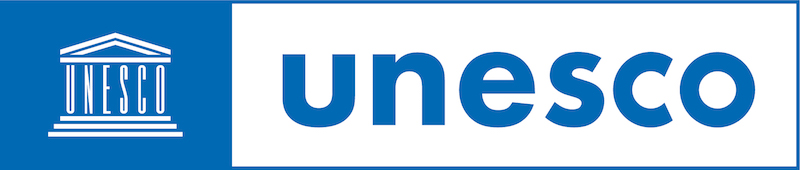
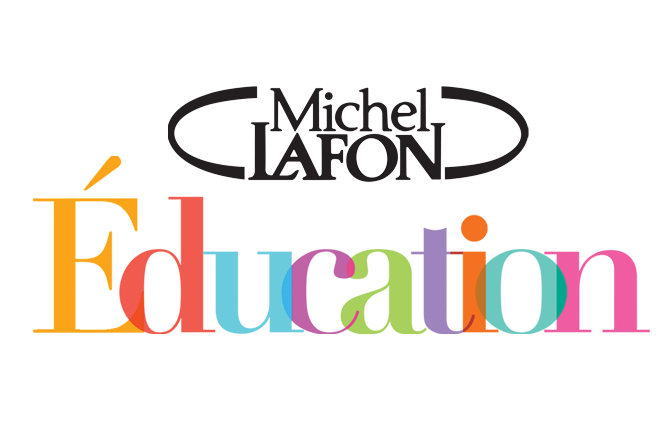

The Bouba and Zaza collection of books has an established footprint with audiences across fifteen African countries. Phase one of the project was successfully delivered through the distribution of over 600,000 of the Bouba and Zaza books in various languages.
who we are
Michel Lafon Éducation is a French publishing house dedicated to the publication of school and extracurricular textbooks available in several languages, for African countries. All of the publications from the Michel Lafon Éducation editions work to promote education for all and defend civic values such as respect for others. An expert in this field, Michel Lafon alongside other members in educating children across Africa as part of a global response to COVID-19 created a means of engaging with young readers through the “Bouba and Zaza - Childhood Cultures” collection.
Our Commitment as a book publisher and content creator is to provide the best materials to learners who are kept away from school. We also see distance learning as an opportunity to reinforce and promote education to remote learners within local communities. Our mission for the Bouba and Zaza Educational initiative is to tackle sensitive themes such as the environment, illiteracy, HIV/AIDS to break taboos and raise children's awareness and promote gender equality and access to education for all. We are strongly convinced that education is the best way to promote equality. To promote capacity development we are also developing the Bouba and Zaza animated series in Africa, where we will train woman to work on developing the series through embarking on an animation production apprenticeship training programme. This will provide skills to young women in a tech and male dominated industry.
Clement Lafon – Director

Gifts that create social change
Join us to Stop Education disruption and leave no child behind
Together, we can mobilize and support learning through localised edutainment.
Current footprint
| Phase one distribution map | Ghana, Nigeria, Namibia, Senegal, Guinea, Mali, Niger, DR Congo, Cameroon, Burkina Faso, Ivory Coast, Djibouti, Gabon, Benin, Togo |
| Languages produced in | French, English, Portuguese, Yoruba, Fulfulde, Hausa, Swahili, Lingala |
Our mission
Phase Two of the programme will see the production of twelve animated films based on the original books. With a completed series, we aim to work with potential and interested partners with the ability to distribute the learning toolkit, to help educate children across the globe as a new way of learning.
As part of UNESCO’s global education coalition initiative, the series will be rolled out across multiple African countries with the help of qualified project managers, NGOs and local partners in delivering and implementing practical learning at grassroots level.
Partnerships

